漫画版
第五話「三枚目の後ろ姿」
資料室・前話の続き
メダルの写真を見たときは、ケースと値札ばかり見ていた。
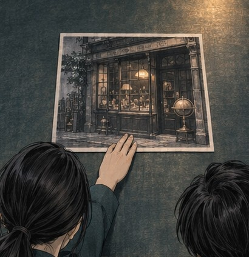
ケースの向こうも見てみよう。
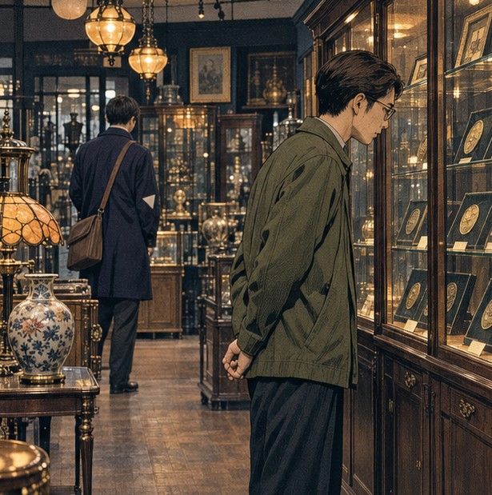
一枚目 ／ 蔵の市の売り場全景。手前の壺は花柄の別の品。
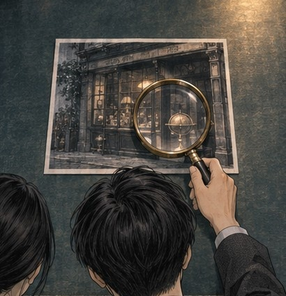
奥の客、右肘に白い布がありませんか？
1 / 4
朝倉は橋の聞き込みを綴じた引き出しを開けた。
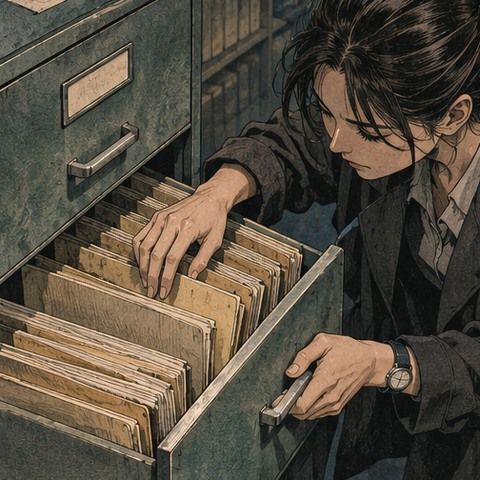
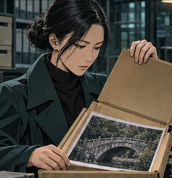
橋の写真も出して。前に見たのは時計塔の位置だった。

二枚目 ／ 石橋
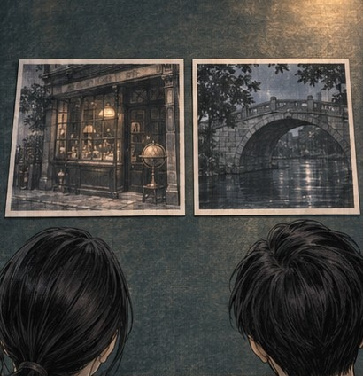
橋の写真も、右肘に同じ白い三角。
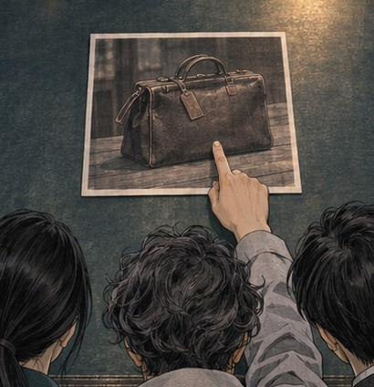
鑑識・瀬尾
市場の全景にも茶色い鞄が写っていた。壺の引き渡し資料を出してみよう。
2 / 4
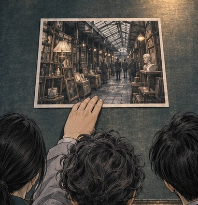
壺の引き渡し資料から、三枚目の写真を取り出した。
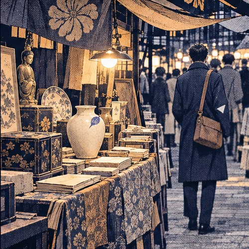
三枚目 ／ 古物市場の全景
売り場
古物市場
鑑識スタッフも立ち会い、瀬尾が三枚の写真を机に並べた。
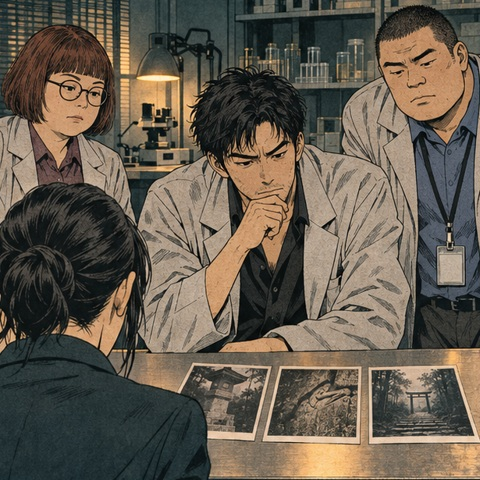
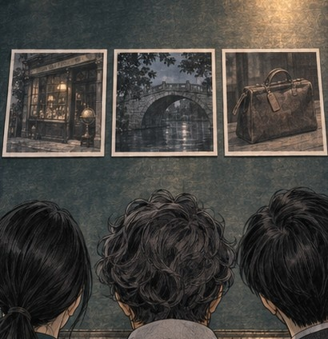
右肘の白い三角、三枚とも同じ位置だ！ 鞄も似てる。同じ人かもしれない。
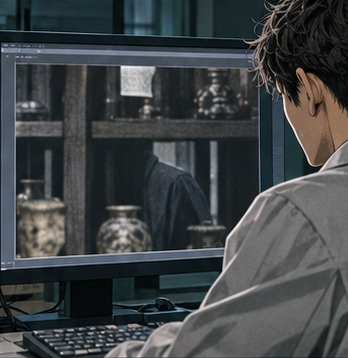
顔は写っていない。服と鞄だけじゃ身元は分からないな。
3 / 4
照合欄 同一人物の可能性あり。事件への関与は未確認。
撮影場所と、共通している特徴を照合欄に残します。
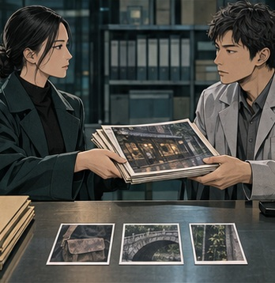
全景も添えて。肘だけ送ると、次の人には時計塔も売り場も見えない。
全景を送って数日後、携帯が震えた。画面には「野鳥園」。
4 / 4